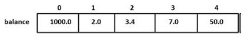
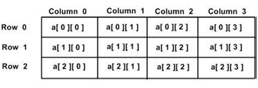

Objectives : At the end of the lesson students are expected to:
C Array is a collection of variables belongings to the same data type. You can store group of data of same data type in an array.
Example for C Arrays:
Declaring Arrays
typearrayName [ arraySize ];
double balance[10];
Here, balance is a variable array which is sufficient to hold up to 10 double numbers.
Initializing Arrays
You can initialize an array in C either one by one or using a single statement as follows:
double balance[5] = {1000.0, 2.0, 3.4, 7.0, 50.0};
The number of values between braces { } cannot be larger than the number of elements that we declare for the array between square brackets [ ].
If you omit the size of the array, an array just big enough to hold the initialization is created. Therefore, if you write:
double balance[] = {1000.0, 2.0, 3.4, 7.0, 50.0};
You will create exactly the same array as you did in the previous example. Following is an example to assign a single element of the array:
balance[4] = 50.0;

The above statement assigns the 5th element in the array with a value of 50.0. All arrays have 0 as the index of their first element which is also called the base index and the last index of an array will be total size of the array minus 1. Shown below is the pictorial representation of the array we discussed above.
Accessing Array Elements
double salary = balance[9];
The above statement will take the 10th element from the array and assign the value to salary variable. The following example shows how to use all the three above-mentioned concepts viz. declaration, assignment, and accessing arrays:
#include <stdio.h>
int main ()
{
int n[ 10 ]; /* n is an array of 10 integers */
inti,j;
/* initialize elements of array n to 0 */
for ( i = 0; i < 10; i++ )
{
n[ i ] = i + 100; /* set element at location i to i + 100 */
}
/* output each array element's value */
for (j = 0; j < 10; j++ )
{
printf("Element[%d] = %d\n", j, n[j] );
}
return 0;
}
When the above code is compiled and executed, it produces the following result:
Element[0] = 100
Element[1] = 101
Element[2] = 102
Element[3] = 103
Element[4] = 104
Element[5] = 105
Element[6] = 106
Element[7] = 107
Element[8] = 108
Element[9] = 109
There are 2 types of C arrays. They are,
1. One dimensional array in C:
2. Multidimensional Arrays
C programming language allows multidimensional arrays. Here is the general form of a multidimensional array declaration:
type name[size1][size2]...[sizeN];
For example, the following declaration creates a three-dimensional integer array:
intthreedim[5][10][4];
typearrayName [ x ][ y ];
Where type can be any valid C data type and arrayNamewill be a valid C identifier. A two-dimensional array can be considered as a table which will have x number of rows and y number of columns. A two-dimensional array a, which contains three rows and four columns can be shown as follows:

Thus, every element in the array a is identified by an element name of the form a[ i ][ j ], where ‘a’ is the name of the array, and ‘i' and ‘j’ are the subscripts that uniquely identify each element in ‘a’.